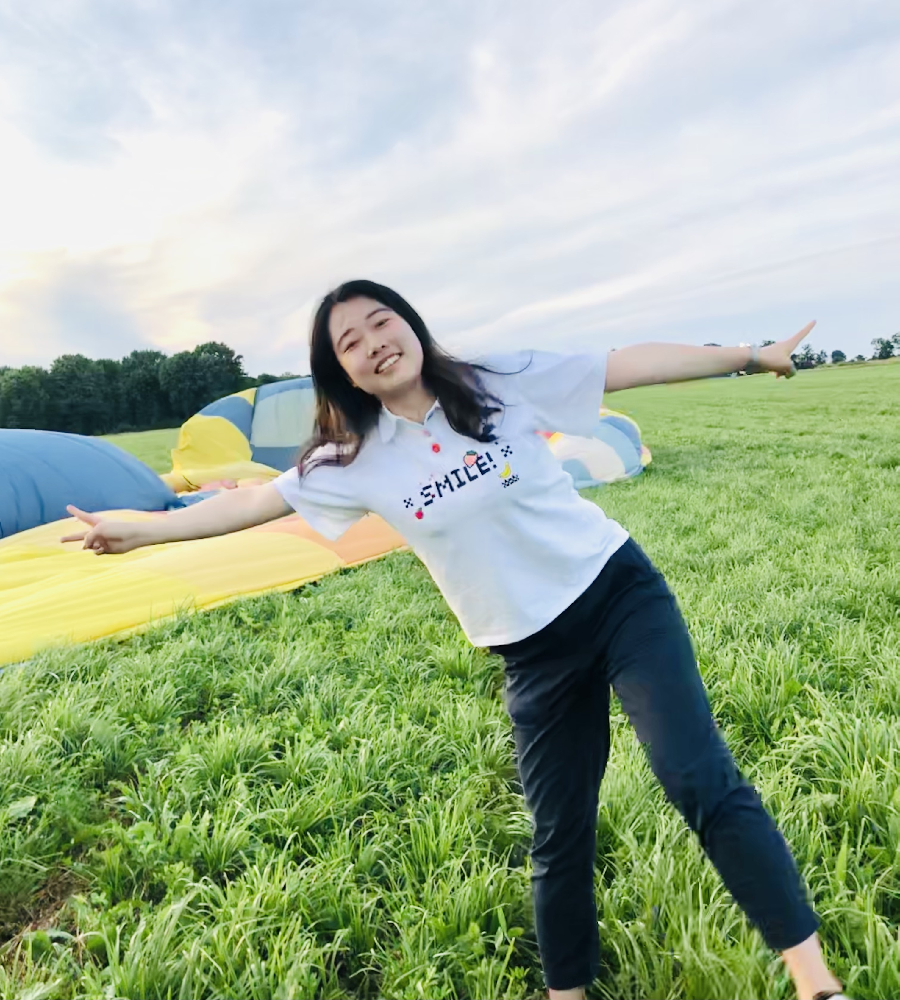
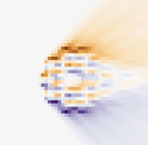
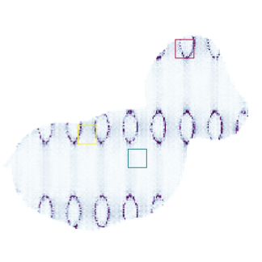
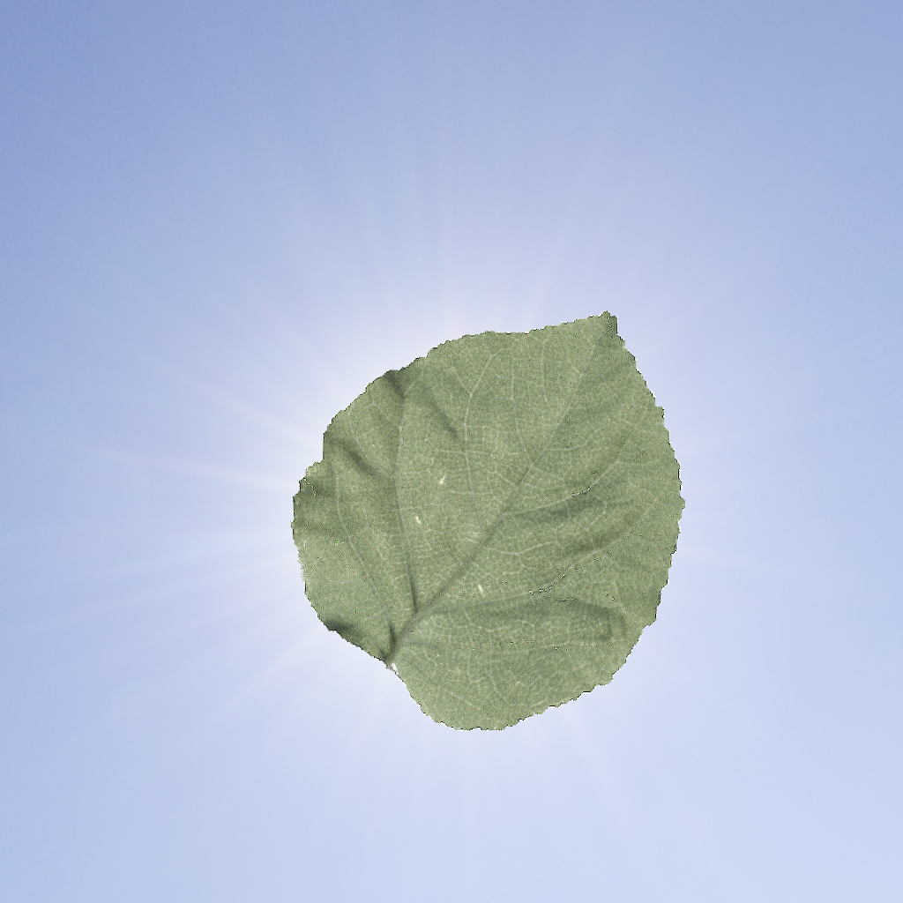
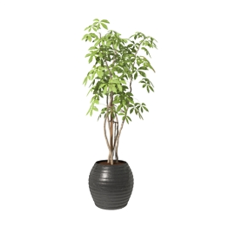
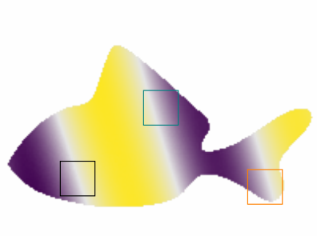
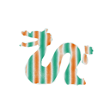
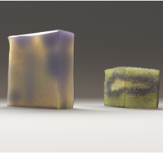
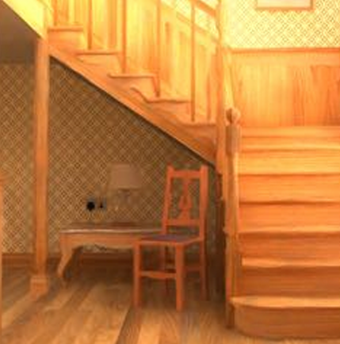
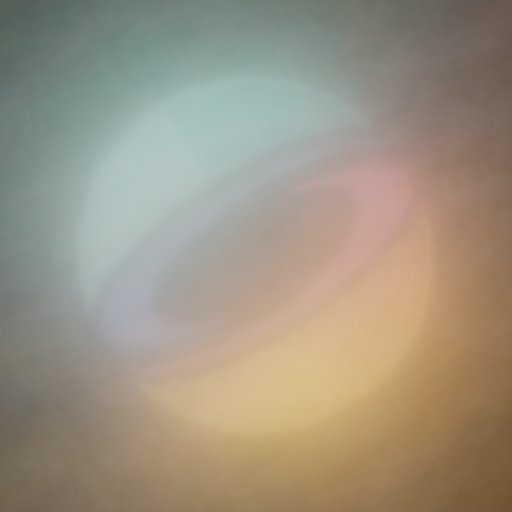

Xi Deng
Postdoctoral Researcher
California Institute of Technology (Caltech)
I am a postdoctoral researcher at Caltech, working with Prof. Anima Anandkumar. I received my Ph.D. in Computer Science from Cornell University, where I was advised by Prof. Steve Marschner in the Graphics and Vision Group. My research focuses on physically based light transport simulation, differentiable rendering, inverse problems, Monte Carlo methods, and neural operators for scientific computing.
Before joining Cornell, I was a master's student in the Digital Arts program at Dartmouth College. I completed my master's thesis in the Visual Computing Lab under the supervision of Prof. Wojciech Jarosz.
Publications
* denotes equal contribution.

Differentiable Neutron Transport
ACM Transactions on Graphics (Proceedings of SIGGRAPH 2026), 45(4)


Reconstructing Translucent Thin Objects from Photos
Proceedings of SIGGRAPH Asia 2024

A Simple Approach to Differentiable Rendering of SDFs
Proceedings of SIGGRAPH Asia 2024


Neural Caches for Monte Carlo Partial Differential Equation Solver
Proceedings of SIGGRAPH Asia 2023

Reconstructing Translucent Objects Using Differentiable Rendering
Proceedings of SIGGRAPH 2022

Path Graphs: Iterative Path Space Filtering
ACM Transactions on Graphics (Proceedings of SIGGRAPH Asia), 40(6), December 2021

Photon Surfaces for Robust, Unbiased Volumetric Density Estimation
ACM Transactions on Graphics (Proceedings of SIGGRAPH), 38(4), July 2019
Industry Experience
Research Intern
Disney Research · Zurich, Switzerland
2018
Research Intern
Adobe Research
2020
Research Intern
NVIDIA Research
2022
Teaching
CS1133: Introduction to Python
Cornell University
Lecturer · Summer 2025
CS1110: Intro to CS — Design and Development
Cornell University
Lecturer · Summer 2023
CS5625: Interactive Computer Graphics
Cornell University
Teaching Assistant · Spring 2021
Graphics & Vision Seminar
Cornell University
Organizer · Spring 2020
CS 65/165: Smartphone Programming
Dartmouth College
Teaching Assistant · Winter 2018
CS 24/124: Computer Animation
Dartmouth College
Teaching Assistant · Fall 2017
Talks
Solving Inverse Transport Problems using Differentiable Simulation
Invited Talk, UC San Diego · March 27, 2026
Solving Inverse Transport Problems using Differentiable Simulation
Journal Club, Invited Talk, Stanford University · May 13, 2025
Monte Carlo for PDEs
Invited Talk, California Institute of Technology · May 6, 2025
Solving Inverse Transport Problems using Differentiable Simulation
Invited Talk, California Institute of Technology · May 1, 2025
Reconstructing the Physical Properties of Translucent Objects: Applications in Art, Science, and Beyond
Computer Graphics Lab, Invited Talk, Yale University · February 18, 2025
Reconstructing the Physical Properties of Translucent Objects: Applications in Art, Science, and Beyond
CS294 Reading Course, Invited Talk, Dartmouth College · February 7, 2025
Reconstructing the Physical Properties of Translucent Objects: Applications in Art, Science, and Beyond
CS Student Colloquium, Cornell University · December 16, 2024
Reconstruction and Differentiable Rendering
CS294 Reading Course, Invited Talk, Dartmouth College · January 31, 2024
Reconstructing Translucent Object Using Differentiable Rendering
Games Webinar 236 · March 16, 2023 (in Mandarin)
Reconstructing Translucent Objects Using Differentiable Rendering
CHEN GROUP, Research101, Beijing University of Posts and Telecommunications · April 29, 2022
Path Graphs: Iterative Path Space Filtering
Computer Graphics and Vision Seminar, Cornell University · March 8, 2021
Photon Surfaces for Robust, Unbiased Volumetric Density Estimation
CS294 Reading Course, Invited Talk, Dartmouth College · February 24, 2020
Inverse Light Transport
Computer Graphics and Vision Retreat, Cornell University · February 3, 2020
Photon Surfaces for Robust, Unbiased Volumetric Density Estimation
Computer Graphics and Vision Seminar, Cornell University · September 23, 2019
Visitors
Your location is shown on the map. Pins are placed per visit session — data is not stored.